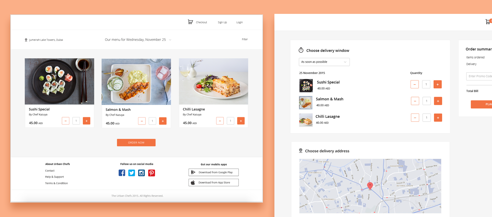

A virtual restaurant that delivers chef prepared meals

The Challenge
The scope for the Urban Chefs minimal viable product was fairly large. The founders were interested in:
Delivering food to specific neighborhoods in Dubai
Creating separate menu items for different neighborhoods based on demand
Allow preorders for the upcoming week
Deliver within a specific delivery window, to a specific address, cash or credit payment
Orders would be dispatched to trucks and delivery staff on private apps
Besides carrying out my tasks as a product manager, I also knew I had to design the website and apps as well as support the front end team to implement styling.
The Solution
The key was to manage the workflow and delegate when necessary:
As a product manager I took full responsibility to document, communicate all new and updated requirements to the development team and test deployed features
As the team's only designer, I crafted majority of the wireframes and highfidelity mockups and delegated delivery app wireframes to the front-end team
As part of the front end team, I refactored or wrote HTML, CSS for complex interfaces